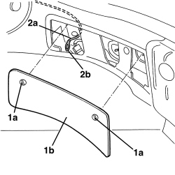
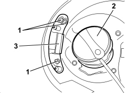
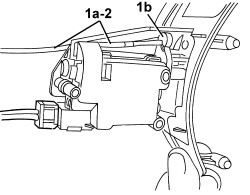
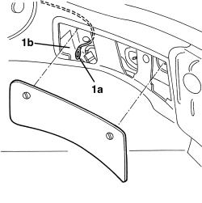
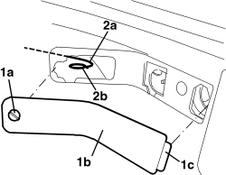

7025C32 FUEL FILLER FLAP CATCH CONTROL - R+R
- Path
- Procedures > 70 FITTINGS > 7025 COMPARTMENT COVERS > 7025C VARIOUS FLAPS (EXTERIOR) > 7025C32 FUEL FILLER FLAP CATCH CONTROL - R+R
- Kind
- repair procedure (removal / refitting; the operation number is the code)
- Applies to
- all engines; all production periods
- Interactive page
- https://sloeber94.github.io/elrnDB-aBrrSpdr/en/#/946002573
Applies to: all engines; all production periods
 Removing
Removing
 Refitting
Refitting- Open the tailgate.
1. Release the retainers (1a) and remove the right rear light cluster access cover (1b).
2. Extract the fuel filler emergency opening control cord (2a).
Fit a sensor in the end (2b) of the cord (to be used for reinserting the cord during the refitting stage).

Applies to: all engines; all production periods
- Open the fuel filler cap access flap.
1. Undo the motor fixing bolts.
2. Undo the fuel filler cap.
3. Gently extract the motor support.
- Retighten the fuel filler cap.

Applies to: all engines; all production periods
1. Disconnect the emergency control cord (1a) from the motor retainer (1b).
2. Extract the actual cord leaving the sensor in its place.

Applies to: all engines; all production periods
Refitting
Removing- Check that the emergency control cord is not damaged.
- Connect the emergency control cord to the motor retainer.
1. Using the sensor, place the cord (1a) in the right rear light cluster access compartment (1b).

Applies to: all engines; all production periods
- Undo the fuel filler cap.
- Place the support and motor in position and secure them using the bolts.
- Retighten the fuel filler cap.
- Close the fuel filler cap access flap.
- Working from the luggage compartment, check that the cord is working.
- Place the right rear light cluster access cover in position and secure it using the retainers.
- Close the tailgate.
Applies to: engines: 2.2 JTS, 3.2 JTS; all production periods; only with equipment: Spider
Removing
Refitting- Open the boot lid.
1. Rotate the retainer (1a) and release it, then remove the access cover (1b) for the right rear light cluster, releasing the retainer (1c).
2. Extract the fuel filler emergency opening control cord (2a). Fit a sensor in the end (2b) of the cord (to be used for reinserting the cord during the refitting stage).

Applies to: engines: 2.2 JTS, 3.2 JTS; all production periods; only with equipment: Spider
- Open the fuel filler cap access flap.
1. Undo the motor fixing bolts.
2. Undo the fuel filler cap.
3. Gently extract the motor support.
4. Retighten the fuel filler cap.

Applies to: engines: 2.2 JTS, 3.2 JTS; all production periods; only with equipment: Spider
1. Disconnect the emergency control cord (1a) from the motor retainer (1b).
2. Extract the actual cord leaving the sensor in its place.

Applies to: engines: 2.2 JTS, 3.2 JTS; all production periods; only with equipment: Spider
Refitting
Removing- Check that the emergency control cord is not damaged.
- Connect the emergency control cord to the motor retainer.
1. Using the sensor, place the cord (1a) in the right rear light cluster access compartment (1b).

Applies to: engines: 2.2 JTS, 3.2 JTS; all production periods; only with equipment: Spider
- Undo the fuel filler cap.
- Place the motor and support in position.
- Retighten the fuel filler cap.
- Tighten the bolts fixing the motor.
- Close the fuel filler cap access flap.
- Working from the luggage compartment, check that the cord is working.
- Place the right rear light cluster access cover in position and secure it using the retainers.
- Close the boot lid.